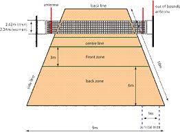
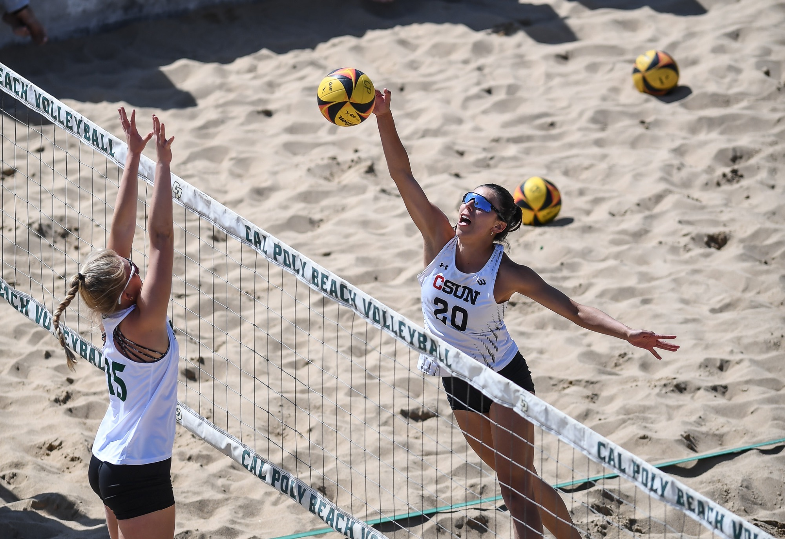

Одбојкашки терен је правоугаоног облика и има димензије 18 к 9 метара.
Мрежа је постављена у центар терена и висока је 2,43 метра за мушкарце и 2,24 метра за жене. Линије терена:
Терен је мрежом подељен на две половине, а свака половина је даље подељена на три једнака дела. Задњи ред је простор иза линије напада, и то је место где играчи задњег реда бораве током надигравања.
Граничне линије
Средња линија
Линија напада
Простор за сервирање је иза задње линије и може се слободно сервирати с било којег места дуж линије.
Екипа сме лопту такнути три пута у једном поену, а исти играч не сме одиграти лопту двапут узастопце, осим ако је претходно изблокирао противничког играча, у ком случају се лопта може додирнути 4 пута (блок и 3 лопте).
Лопта остаје у игри док не додирне терен, зид или неки предмет, односно док неко од играча не направи грешку.

Правила бодовања
Утакмице се играју на три добијена сета од по 25 поена, а највише се може одиграти пет сетова. За разлику од прва четири сета, пети (који се још зове и тај-брејк) се игра до 15 поена. У случају изједначеног резултата крајем сета, победнику су потребна два поена разлике да би завршио сет у своју корист.
Позиције и ротације
На терену је шест позиција, означених бројевима 1-6. Играчи предњег реда су одговорни за напад и блокирање, док су играчи задњег реда одговорни за додавање и одбрану. Сваки играч се ротира у смеру казаљке на сату након што њихов тим победи у надигравању, што значи да се померају на следећу позицију и преузимају одговарајуће одговорности. Дизач је одговоран за постављање нападача и обично је стратег тима.
Зоне
Предња зона: Предња зона, у сваком пољу, ограничена је осом средње
линије и задњом ивицом линије напада. Сматра се да се предња
зона ван бочних линија простира до краја слободне зоне.
Зона за сервирање: Зона за сервирање је простор ширине 9 м који се налази иза сваке
основне линије. Бочно је ограничена са две кратке линије, дужине по 15 цм,
које су уцртане 20 цм иза основне линије, као продужеци основних линија. Обе кратке линије су укључене у ширину зоне за сервирање. У дубину, зона за сервирање се простира до краја слободне
зоне.
Зона за замену играча: Зона за замену играча је ограничена
продужетком обе линије напада до записничког
стола.
Зона за промену Либера: Зона за промену Либера је део слободне зоне
на страни клупа за играче, ограничена
продужетком линије напада до основне линије.
Врсте одбојке
Indoor Volleyball: Oва је најпознатија врста одбојке која се игра у затвореној сали. Тимови се састоје од шест играча на терену.
Beach Volleyball: Ова врста одбојке се игра на песку, на специјално изграђеним плажама или песковитим теренима. Тимови се састоје од два играча и нема ограничења у преласку преко мреже.

Mini Volleyball: Ова врста одбојке је прилагођена за децу и младе играче. Терен и мрежа су мањи, а број играча на терену и правила игре су прилагођени узрасту и способностима деце.